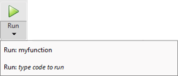
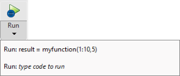

Configure the Run Button for Functions
Functions are program files that accept inputs and return outputs. To run functions
that require input argument values or any other additional setup from the Editor,
configure the  Run button.
Run button.
To configure the Run button in the Editor, click
Run
 and add one or more run commands.
and add one or more run commands.
For example:
Create the function
myfunction.mthat performs a calculation using the inputsxandyand stores the results inz.function z = myfunction(x,y) z = x.^2 + y;Go to the Editor tab and click Run
 . MATLAB® displays the list of commands available for running the
function.
. MATLAB® displays the list of commands available for running the
function.
Click the last item in the list and replace the text type code to run with a call to the function including the required input arguments. For example, enter the text
result = myfunction(1:10,5)to runmyfunctionwith the input arguments1:10and5, and store the results in the variableresult. MATLAB replaces the default command with the newly added command.
To run multiple commands at once, enter the commands on the same line. For example, enter the text
a = 1:10; b = 5; result = myfunction(a,b)to create the variablesaandband then callmyfunctionwithaandbas the input arguments.Note
If you define a run command that creates a variable with the same name as a variable in the base workspace, the run command variable overwrites the base workspace variable when you run that run command.
Click the
 Run button. MATLAB runs the function using the first run command in the list. For
example, click
Run to run
Run button. MATLAB runs the function using the first run command in the list. For
example, click
Run to run myfunctionusing the commandresult = myfunction(1:10,5). MATLAB displays the result in the Command Window.result = 6 9 14 21 30 41 54 69 86To run the function using a different run command from the list, click Run
and select the desired command. When you
select a run command from the list, it becomes the default for the
Run button.To edit or delete an existing run command, click Run
, right-click the command, and then select
Edit or Delete.
Note
When you run a live function using the  Run button, the output displays in the Command Window.
Run button, the output displays in the Command Window.